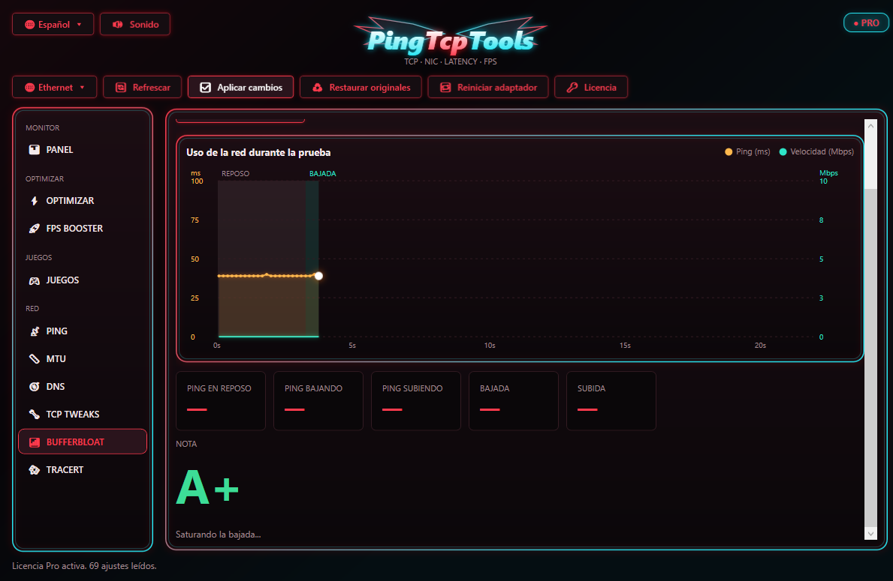

Qué es el bufferbloat y cómo reducirlo para jugar sin picos de ping
This guide is currently available in Spanish only. Use your browser’s translate option to read it in English.

Tu ping está en 25 ms, pero en cuanto tu hermano empieza a ver una serie o Steam descarga una actualización, sube a 300 ms y la partida se vuelve injugable. No es casualidad ni «internet lento»: se llama bufferbloat, es uno de los problemas de latencia más comunes en casa y casi nadie lo mide.
Qué es el bufferbloat
Los routers y módems tienen una memoria (buffer) donde guardan paquetes cuando llegan más datos de los que pueden enviar. Un buffer pequeño es útil; uno demasiado grande es un problema: cuando la conexión se satura, cientos de paquetes se quedan en cola, y tu paquete del juego tiene que esperar detrás de todos ellos.
Imagina un peaje con una sola caseta. Si la fila es corta, pasas rápido. Si hay 300 autos esperando, da igual lo rápido que sea tu auto: esperarás. Eso es exactamente lo que le pasa a tu ping cuando la conexión está llena.
Síntomas típicos
- El ping es bueno cuando estás solo, pero sube mucho cuando alguien usa la red.
- Las videollamadas se cortan o se congelan cuando subes archivos.
- Picos de lag al empezar una descarga en Steam, Epic o la consola.
- Los test de velocidad dan buenos Mbps, pero jugar se siente mal.
El bufferbloat no tiene que ver con tu velocidad contratada: puedes tener 500 Mbps y sufrirlo igual.
Cómo medir el bufferbloat
Manualmente
- Abre el Símbolo del sistema y ejecuta
ping 8.8.8.8 -t. Anota el ping en reposo. - Sin cerrar esa ventana, inicia una descarga grande (por ejemplo, un juego en Steam) o un test de velocidad.
- Observa el ping durante la descarga. Luego prueba con una subida (un archivo grande a la nube).
- La diferencia entre el ping en reposo y el ping bajo carga es tu bufferbloat.
Con PingTcpTools
La prueba de bufferbloat de la app hace esto automáticamente: mide el ping en reposo, satura la descarga y luego la subida, dibuja una gráfica en vivo y te da una nota según cuánto aumenta la latencia:
| Nota | Aumento de ping bajo carga | Qué significa |
|---|---|---|
| A+ | menos de 5 ms | Excelente. Puedes jugar aunque la red esté ocupada. |
| A | 5–30 ms | Muy bueno. |
| B | 30–60 ms | Aceptable, se nota en shooters. |
| C | 60–200 ms | Problema claro con la red ocupada. |
| D | 200–400 ms | Muy malo. |
| F | más de 400 ms | Injugable cuando alguien usa la red. |
Te dice también si el problema está en la descarga o en la subida, lo que ayuda a elegir la solución.
Cómo solucionarlo
1. SQM o Smart Queue en el router (la solución real)
Los algoritmos modernos de gestión de colas, como fq_codel o CAKE, mantienen las colas cortas y reparten la conexión de forma justa. Muchos routers los incluyen con nombres como «Smart Queue», «SQM», «QoS adaptativa» o «Gestión de ancho de banda». Al activarlo, configura un límite de alrededor del 85–95 % de tu velocidad real de bajada y de subida: así la cola se forma en el router (que la gestiona bien) y no en el módem del proveedor.
2. QoS por prioridad
Si tu router no tiene SQM, la QoS clásica permite priorizar tu PC o tu consola. Ayuda menos que SQM, pero algo mejora.
3. Limitar descargas
Steam, Epic, Battle.net, qBittorrent y otros permiten fijar un límite de velocidad. Un límite al 70–80 % de tu conexión evita la saturación.
4. Cambiar de router o pedir otro al proveedor
Algunos routers de operador no ofrecen ninguna de estas opciones. Puedes pedir un equipo más moderno o poner tu propio router detrás del módem del proveedor, en modo puente.
5. Cable en vez de Wi-Fi
El Wi-Fi también tiene sus propias colas. Conectar la PC por cable reduce el problema en tu equipo.
¿Se arregla desde Windows?
En gran parte, no: el bufferbloat ocurre en el router o el módem, no en tu PC. Los ajustes de Windows y de la tarjeta de red mejoran otras causas de latencia, pero no vacían la cola del router. Por eso es tan importante medirlo: si tu nota es C, D o F, la mejora más grande que puedes conseguir está en el router, y vale la pena saberlo antes de tocar nada más.
Preguntas frecuentes
¿Contratar más velocidad soluciona el bufferbloat?
No siempre. Con más velocidad la cola se llena con menos frecuencia, pero si el router tiene buffers excesivos el problema vuelve en cuanto se satura. La solución real es SQM.
¿Qué nota de bufferbloat necesito para jugar?
A+ o A es ideal. Con B se puede jugar, pero notarás picos si alguien usa la red. C o peor afecta claramente a juegos competitivos.
¿La prueba consume muchos datos?
Satura la conexión unos segundos en cada dirección. Si tienes un plan con datos limitados (por ejemplo, internet móvil), tenlo en cuenta.
¿Por qué mi nota cambia según la hora?
Porque la congestión de tu proveedor y el uso de tu red varían. Mide en distintos momentos para tener una idea real.
Guías relacionadas
Cómo bajar el ping en Windows
La guía principal: qué es el ping, qué lo sube y qué puedes hacer de verdad para bajarlo, paso a paso.
Ping, jitter, pérdida de paquetes y tracert
Cómo medir latencia, jitter y pérdida de paquetes, y cómo leer un tracert para saber de quién es la culpa.
El mejor DNS para jugar
Qué hace realmente el DNS, si mejora el ping y cómo encontrar el más rápido desde tu casa.
Los resultados dependen de tu equipo, tu tarjeta de red y tu conexión. Ningún programa puede garantizar una mejora concreta de ping o FPS. Crea un punto de restauración de Windows antes de cambiar ajustes del sistema.